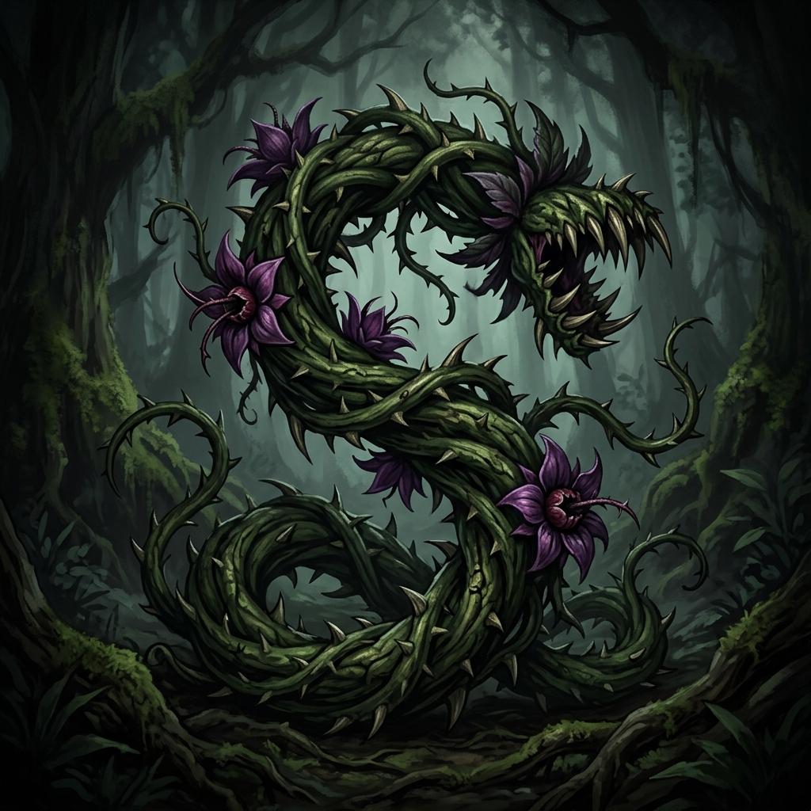
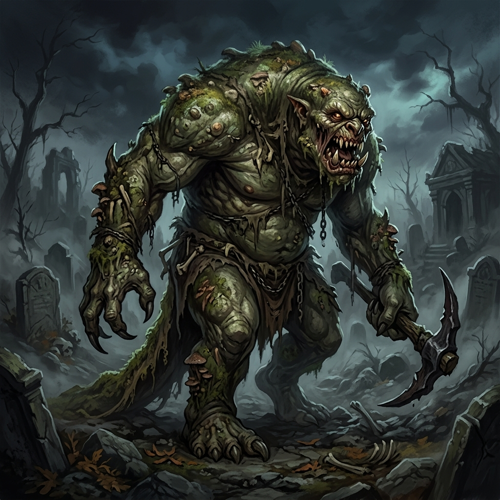
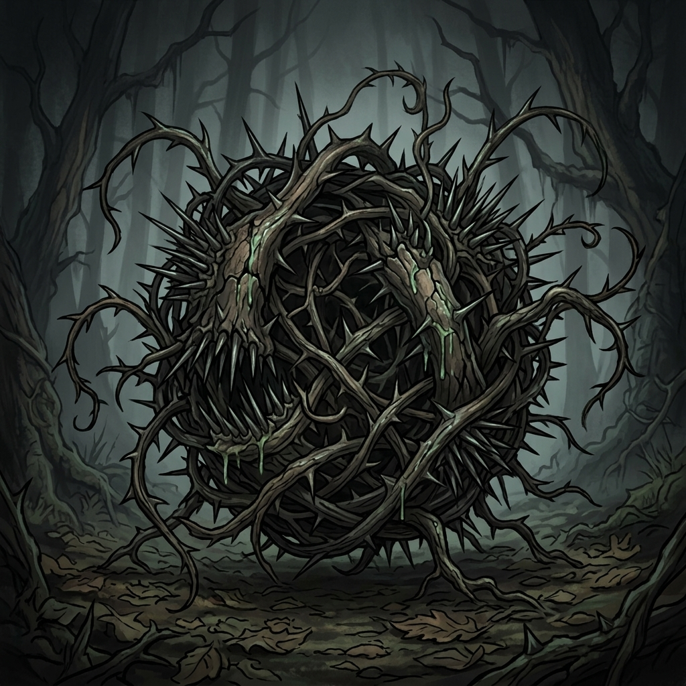

Assassin Vine CR 3
„A thick, knotted vine with purple flowers and thorns the size of daggers that lashes out like a snake.“
Fjarlægð: The undergrowth here is unusually thick, and the vines seem to twitch against the wind.
Stílprófun (Art Style Validation) — 3 samþykktar viðmiðanir og 2 nýjar prófanir
Prófun á samræmi í stíl, litum, smáatriðum og dökku RPG-andrúmslofti samkvæmt reglum í .agents/rules/monster-art.md og docs/monster-art-style.md.

„A thick, knotted vine with purple flowers and thorns the size of daggers that lashes out like a snake.“
Fjarlægð: The undergrowth here is unusually thick, and the vines seem to twitch against the wind.

„A hulking behemoth with moss-covered warty green skin and claws like iron pickaxes.“
Fjarlægð: The earth trembles faintly under heavy, thudding footsteps accompanied by the stench of rotten carrion.

„A gaunt grey wolf with bared fangs dripping foul saliva, crouching to pounce at your throat.“
Fjarlægð: Low amber eyes gleam in the dark shadows between the trees, followed by a muffled snarl.

„A bloated, slimy parasite rearing up with a circular maw lined with needle teeth.“
Fjarlægð: A wet, glistening shape wriggles slowly through the shallow murky puddles.

„A tangled ball of black thorns and twisted roots lashing out with barbed tendrils.“
Fjarlægð: Thorny brambles rustle in the shadow of the trees, creeping unnaturally forward.